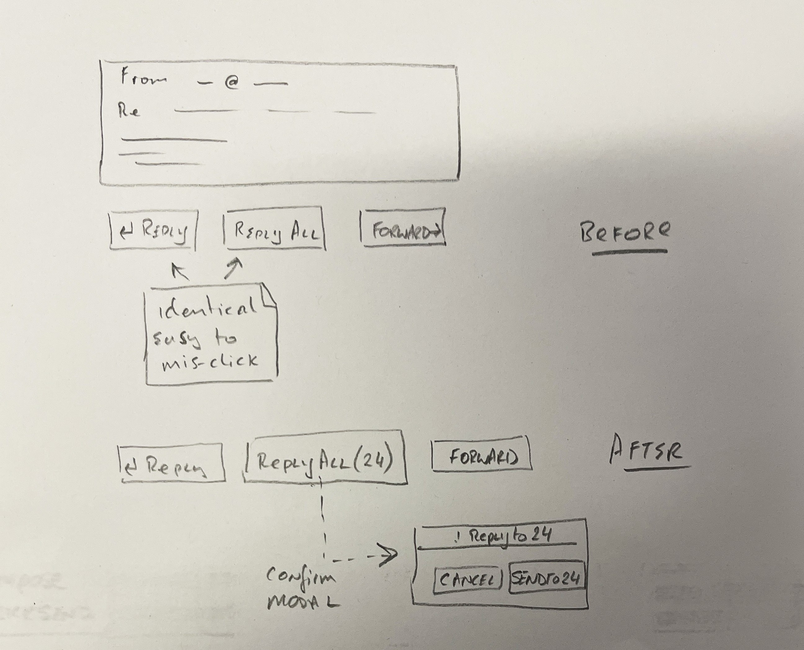
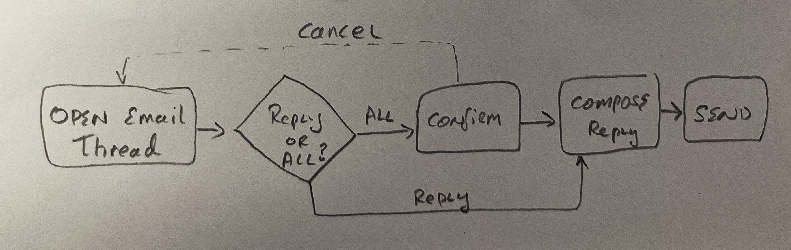
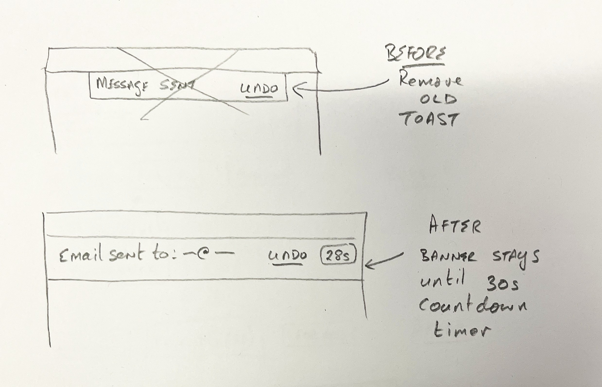
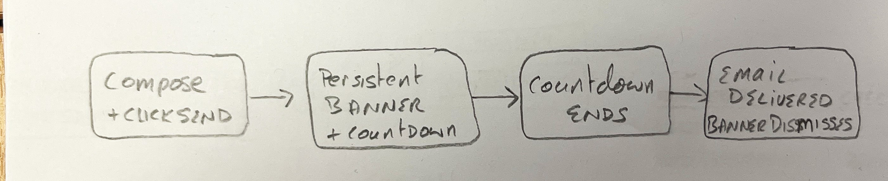
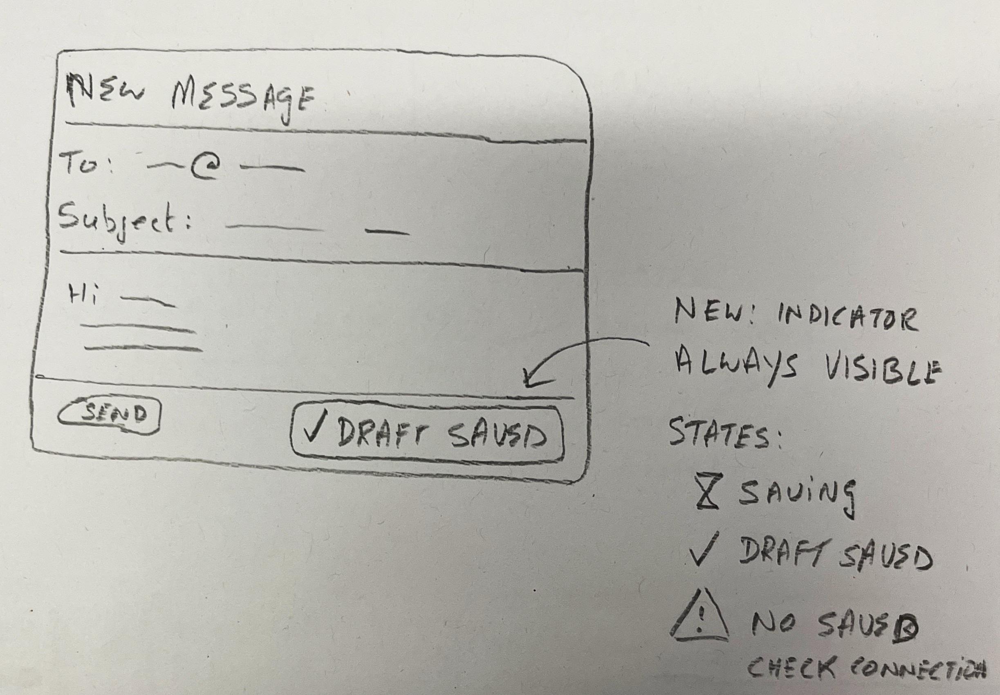

Section 1
Introduction
About the Application
Gmail (Google Mail) is one of the world's most widely used email services, with over 1.8 billion active users as of 2024. Launched by Google in 2004, Gmail is a web-based email client accessible at mail.google.com and through native mobile apps on iOS and Android. It provides core email functions — composing, sending, receiving, and organising messages — alongside search, labels, filters, and integrations with the broader Google Workspace suite.
Although Gmail is a mature, heavily tested product, it is not without usability friction. Its interface has grown considerably over two decades, adding features that sometimes obscure core tasks behind layers of options and modal windows. Analysing Gmail allows us to examine a well-resourced design and still identify meaningful interaction problems — a skill directly transferable to evaluating newer, less polished platforms like CompuCore.
Assigned Flows
Two user flows have been selected for this project:
- Flow 1 — Compose and Send a New Email: A user (student role) opens Gmail, creates a new message from scratch, fills in recipient, subject, and body, and sends it successfully.
- Flow 2 — Reply to a Received Email: A user (student role) opens their inbox, locates an email they have received, opens it, writes a reply, and sends the reply within the thread.
Why These Flows Matter
These two flows represent the fundamental read/write cycle of any messaging or feedback platform. In an educational context like CompuCore, students must be able to initiate communication (compose) and respond to feedback (reply) — making these flows directly analogous to submitting work and responding to instructor comments. Any usability problems discovered in Gmail's implementation of these flows offer transferable lessons for designing more effective submission and feedback interfaces.
Additionally, these flows are performed by users with a wide range of experience levels — from daily power-users to first-time email writers — making them a rich source of pain points at varying levels of severity.
Section 2
User & Task Analysis
Flow 1 — Compose and Send a New Email
- Flow name
- Compose and Send a New Email
- User role
- Student (general email user)
- Trigger
- The user needs to initiate contact with someone — e.g. emailing a lecturer a question, or sending a document to a classmate.
- End state
- The email has been sent and the user sees the "Message sent" confirmation. The message appears in the Sent folder.
Flow summary: The compose flow is initiated from anywhere in Gmail via the persistent "Compose" button. The user fills in three fields (To, Subject, Body) and clicks Send. While the steps are few, the flow hides friction in ambiguous autosave behaviour, an easy-to-miss confirmation toast, and a very short default undo window. A first-year student using Gmail for the first time may not realise their draft is being saved, may accidentally send to the wrong person, or may miss the single opportunity to undo a sent email.
| # | User Action | System Response | User's Goal | Pain Point / Issue? |
|---|---|---|---|---|
| 1 | Navigates to mail.google.com and signs in | Inbox loads showing unread emails in bold | Access email to start composing | — |
| 2 | Clicks the "+ Compose" button (top-left sidebar) | A compose modal window opens in the bottom-right corner of the screen | Start writing a new message | Modal position (bottom-right) is non-standard — some users look in the centre of the screen first |
| 3 | Types the recipient's email address in the "To" field | Autocomplete suggestions appear from saved contacts after 2–3 characters | Address the email to the correct person | High Autocomplete can surface multiple contacts with similar names; no profile photo by default — user may select wrong contact |
| 4 | Types a subject line in the "Subject" field | No validation; field accepts any text including empty string | Give the email a meaningful title | Medium No warning if Subject is left blank — email sends successfully with empty subject, which may go unnoticed |
| 5 | Types the message body in the large text area | Draft is silently autosaved to Drafts folder every ~30 seconds | Write the content of the message | Medium No visible autosave indicator in the compose window — user cannot confirm their work is being saved |
| 6 | (Optional) Clicks the paperclip icon to attach a file | OS file picker dialog opens; selected file uploads with progress indicator | Include a file with the message | — (attachment flow is clear and well-indicated) |
| 7 | Reviews the composed email before sending | No preview of how the email will appear to the recipient | Check the email looks correct before sending | Low No "preview as recipient" option — formatting differences in rich text may surprise sender |
| 8 | Clicks the blue "Send" button | A small "Message sent" toast notification appears at the bottom-left for approximately 3–5 seconds, with an "Undo" link. The compose window closes. Default undo window is 5 seconds. | Deliver the email to the recipient | High Toast disappears quickly; Undo window is only 5 seconds (default) — very easy to miss if the user looks away |
| 9 | Checks Sent folder to confirm email was delivered | Sent folder updates and shows the email at the top | Confirm email was sent successfully | Low User must navigate to a separate folder to verify — there is no persistent in-inbox confirmation |
Flow 2 — Reply to a Received Email
- Flow name
- Reply to a Received Email
- User role
- Student (general email user)
- Trigger
- The user sees an unread email in their inbox and wants to respond to it — e.g. a lecturer has sent feedback and the student wants to reply.
- End state
- The reply has been sent and the thread updates to show the conversation. The user can see their reply within the thread.
Flow summary: Replying to an email is the core "response" interaction in Gmail. It begins with locating and opening an email, then composing within the thread context. The flow introduces the significant Reply vs Reply All ambiguity, as well as confusion around thread grouping and quoted text. A first-time user may accidentally reply to all recipients of a group email, may not know their reply was sent because the thread collapses, or may struggle to distinguish between an inline reply box and the thread display.
| # | User Action | System Response | User's Goal | Pain Point / Issue? |
|---|---|---|---|---|
| 1 | Opens Gmail inbox | Inbox displays with unread emails in bold; unread count shown in browser tab | Find the email they want to reply to | — |
| 2 | Scans inbox to locate the target email | Emails grouped by thread — multiple replies under one subject line show as a single row with a count badge | Identify and find the right email | Medium Thread grouping can be confusing — users may not realise multiple emails are nested; clicking opens at the most recent, not necessarily the one they remember |
| 3 | Clicks on the email row | Email opens in reading view; full thread displayed; earlier messages collapsed by default | Read the email to understand what they are replying to | Low Earlier messages in the thread are collapsed — user must click to expand previous context; not obviously expandable |
| 4 | Decides to reply; looks for the Reply action | Two reply buttons at the bottom of the email: ← Reply and ← Reply All — both appear as text buttons with identical arrow icons | Send a response to the sender only | High Reply and Reply All icons are visually near-identical; no persistent colour or size distinction; easy to tap Reply All by mistake, especially on mobile |
| 5 | Clicks "Reply" | An inline reply compose area opens at the bottom of the thread, pre-populated with recipient and quoted original message | Start writing the reply | Medium Inline reply area does not always scroll into view automatically — user may not realise it has opened, especially on smaller screens |
| 6 | Types reply in the compose area | The full original email is quoted below the cursor by default | Write the reply content | Low Quoted text is included in full by default with no obvious way to trim it — clutters reply, increases length |
| 7 | Clicks "Send" | "Message sent" toast appears briefly (3–5 seconds) with an Undo link. The inline compose area closes. The thread count updates. | Deliver the reply to the original sender | Medium After closing, the thread collapses; user must scroll and expand to confirm reply is visible in thread — confirmation is indirect |
| 8 | Returns to inbox (clicks back button or "Inbox" in sidebar) | Inbox shown; the replied thread moves based on sort order (newest first by default) | Return to inbox after replying | — |
Pain Point Log
| # | Flow | Where in the flow? | What happened? | Why is this a problem? | Severity |
|---|---|---|---|---|---|
| 1 | Flow 2 | Step 4 — Choosing reply action | Reply and Reply All buttons look nearly identical — same icon, same size, adjacent placement | Users easily click Reply All when they intend Reply, sending a private response to an entire group — embarrassing and sometimes damaging | High |
| 2 | Flow 1 | Step 8 — After clicking Send | The "Message sent" toast disappears after 5 seconds; the Undo window is only 5 seconds by default | User has no recourse if they notice a mistake after the toast is gone; a 5-second window is too short for most people to react | High |
| 3 | Flow 1 | Step 5 — Typing body text | No visible indicator in the compose window confirms that the draft is being autosaved | User may close the window thinking they've lost their work; creates anxiety during long emails; no feedback violates H1 | Medium |
| 4 | Flow 1 | Step 3 — Entering recipient | Autocomplete suggestions do not always show enough identifying information (e.g. no profile photos or org affiliation shown by default) | User with multiple contacts named "John Smith" may select the wrong person with no warning before sending | High |
| 5 | Flow 1 | Step 4 — Subject field | No warning or prompt when the Subject field is left blank before sending | Email sent with no subject looks unprofessional and may be ignored; a first-time user may not even realise subjects are expected convention | Medium |
| 6 | Flow 2 | Step 5 — Reply box opening | The inline reply area opens at the bottom of the thread but does not always scroll into view automatically | User clicks Reply and nothing obvious appears to have happened — they may click Reply again, creating duplicate replies | Medium |
| 7 | Flow 2 | Step 7 — After sending reply | The thread collapses after sending; user cannot easily confirm reply is in the thread without expanding again | Uncertainty about whether action succeeded; violates H1 (Visibility of system status) | Medium |
| 8 | Flow 2 | Step 2 — Inbox scanning | Thread grouping is not explained; multiple emails collapsed under one row | First-time user may think they only have one email when there are actually three in a conversation; can miss messages | Medium |
| 9 | Flow 1 | Step 2 — Compose modal opens | Compose window appears in bottom-right, not centre of screen | Non-standard modal position; user may look at wrong area; on busy inboxes the compose modal competes visually with the email list | Low |
| 10 | Flow 2 | Step 6 — Composing reply | Full quoted original email included by default with no visible option to remove it without editing | Replies become long and cluttered; recipients may scroll past important content; no obvious "Remove quoted text" button | Low |
Top 3 Pain Points (will drive design proposals in Week 3)
- Reply vs Reply All confusion — High severity — very easy to accidentally email the wrong group of people
- Undo send window too short — High severity — 5 seconds is insufficient; no way to cancel after toast disappears
- No autosave indicator in compose window — Medium severity — causes anxiety; violates visibility heuristic
Section 3
From Analysis to Design
Part 1 — Pain Points Mapped to Heuristics
The three top pain points from the Week 1 log are labelled with the Nielsen heuristic they violate. These drive the design briefs and sketches below.
Part 2 — Design Briefs
Design Brief 1
- Issue
- Reply and Reply All are visually identical buttons placed side by side. When an email has multiple recipients, clicking Reply All sends a private message to the entire group. (H4 Consistency & Standards · H5 Error Prevention)
- Brief
- Make Reply All visually distinct from Reply — different colour, and show a recipient count in the button label. For emails with more than three recipients, require a confirmation step before Reply All completes. The user must be able to distinguish the two actions at a glance, and the system must prevent the error from completing accidentally.
Design Brief 2
- Issue
- After clicking Send, the only feedback is a toast that disappears in ~5 seconds — the same window as the Undo opportunity. A user who looks away has no recourse and no lasting record that the email was sent. (H1 Visibility of System Status · H3 User Control & Freedom)
- Brief
- Replace the disappearing toast with a persistent confirmation banner that shows the recipient and a live countdown. The Undo action must remain reachable until the countdown expires. The user must always be able to tell that an email was sent, to whom, and whether they can still cancel it.
Design Brief 3
- Issue
- Gmail autosaves drafts silently — nothing in the compose window confirms this is happening. A user writing a long email has no way to know whether their work is safe if they close the tab or lose connection. (H1 Visibility of System Status)
- Brief
- Add a small, persistent status indicator to the compose toolbar that shows the current save state — "Saving…", "Draft saved · just now", or a warning if the save fails. The indicator must be present without distracting from writing, and must update in real time so the user always knows their draft is safe.
Part 3 — Sketches, Flows, and Explanations
Sketch 1 — Differentiated Reply Controls
Hand sketch — Reply controls (before & after)

Updated user flow — the fix adds a confirmation step for Reply All to large groups; single Reply is unchanged.
Updated user flow — Reply to group email

This solves H5 because the confirmation modal stops the error from completing — the user is forced to acknowledge they are sending to 24 people before the reply goes out. It also solves H4 because the amber colour and recipient count make the two buttons visually distinct, removing the ambiguity that caused the problem in the first place.
Sketch 2 — Persistent Send Confirmation
Hand sketch — send confirmation (before & after)

Updated user flow — undo path was previously too short to use; fix keeps it reachable for a full 30 s.
Updated user flow — send with extended undo window

This solves H1 because the system status is now visible for the entire undo window — the user can see the email was sent, who it went to, and exactly how long they have left to cancel. It also solves H3 because Undo is now genuinely reachable: 30 seconds is a practical window, unlike the 5-second default that most users cannot react to in time.
Sketch 3 — Visible Draft Autosave Indicator
Hand sketch — compose window with autosave indicator

No flow change — the sequence of steps is identical to before. The fix adds feedback to an existing step rather than changing the path.
This solves H1 because the user can now see that their draft is saved at all times while composing — the autosave is no longer invisible. A user who closes the tab accidentally, or loses connection, will know from the indicator whether their work was captured, removing the uncertainty that currently causes anxiety when writing long emails.
Under Construction - From this point is subject to further development
Section 4
Design Proposals
Three design proposals are presented below, each addressing one of the top three usability issues identified in the heuristic evaluation. Each proposal develops one of the three design briefs from Section 3. The sketch from Week 2 is refined into a Figma wireframe, and peer feedback is recorded during the Week 3 lab session.
Design Proposal 1 — Differentiated Reply Controls
- Problem
- H4H5 Reply and Reply All are visually identical, adjacent buttons. When an email was addressed to multiple recipients, clicking Reply All instead of Reply sends a private response to all of them — a significant privacy and social error that users cannot easily recover from.
- What changed
- The Reply button retains its current style (outlined, blue). The Reply All button is restyled with an amber/warning colour and an explicit recipient count: "Reply All (24)". When the email has more than three recipients, a confirmation modal appears before Reply All sends: "You are about to reply to 24 people — are you sure?" with a Cancel and Confirm button. On mobile, the Reply All button is moved to a secondary position in a "More actions" menu.
- Why this helps
- The colour distinction and recipient count make the difference between Reply and Reply All impossible to miss. The confirmation modal for large groups prevents accidental mass replies before they happen, directly addressing H5 (Error Prevention). Showing the recipient count makes the consequence of the choice visible, satisfying H6 (Recognition over recall).
- Trade-offs / Risks
- The confirmation modal adds one extra click for users who genuinely want to Reply All to a large group. Power users who send group replies frequently may find this annoying. The extra step could be disabled in settings for experienced users (preserving H7 — Flexibility). The amber colour may be mistaken as a warning that the reply will fail, rather than a caution about scope — copy must be carefully worded.
- Prototype sketch
-
Figma frame:
Flow2_Step4_ReplyControls_Redesign - Before / After
-
Before: Fig 3 (annotated screenshot above) — identical Reply /
Reply All buttons. After: see Figma frame
Flow2_Step4_ReplyControls_Redesign.
Sketch — Proposal 1: Differentiated Reply Controls
| Peer Feedback Form Reviewer name: Sarah O'Brien | |||
|---|---|---|---|
| Designer being reviewed: Ken Power | Flow(s): Reply, Send, Compose | ||
| Does the sketch clearly show what is on screen? |
Yes / No / Partly Buttons labelled clearly, layout matches real Gmail. |
Yes / No / Partly Banner and countdown annotated, inbox context shown. |
Yes / No / Partly Status text is tiny — the three states are hard to read. |
| Can you tell what the interface is trying to do? |
Yes / No / Partly Preventing accidental reply-all is immediately obvious. |
Yes / No / Partly Giving time to undo a sent email — very clear intent. |
Yes / No / Partly Reassuring the user their draft is saving — purpose is clear. |
| Does the design show what happens after an action? |
Yes / No / Partly Reply opens compose but sketch doesn't show the sent thread state. |
Yes / No / Partly Countdown and "Delivered ✓" end-state are both sketched. |
Yes / No / Partly Error state shown but no action offered — user is left stuck. |
|
Which proposal is the strongest, and why? Circle one: Proposal 1 / Proposal 2 / Proposal 3 Proposal 2 addresses the most critical failure — once sent, email cannot be recalled without the undo window. The persistent banner is visible and actionable, directly fixing H1 and H3.
|
|||
|
One suggestion to strengthen the strongest idea
Show how the banner collapses when multiple emails are sent back-to-back — a "2 emails pending undo" grouped state would prevent inbox clutter.
|
|||
Design Proposal 2 — Persistent Send Confirmation & Extended Undo Window
- Problem
- H1H3 The "Message sent" toast disappears after ~5 seconds, taking with it the only Undo opportunity. Users who blink, look away, or are slow to react lose all ability to recall the email. There is no persistent record of the send event visible in the main inbox view.
- What changed
- Two changes are made together: (1) The default Undo Send window is extended from 5 seconds to 30 seconds, configurable from 5 to 60 seconds in Settings. (2) The "Message sent" toast is replaced with a persistent banner at the top of the inbox: "Email sent to dr.murphy@setu.ie — Undo (28s)" with a live countdown. The banner auto-dismisses when the undo window expires, turning to a brief green confirmation: "Delivered." The Undo button remains clickable until the countdown reaches zero.
- Why this helps
- The persistent banner with a live countdown makes the system status fully visible (H1) — the user always knows an email was just sent and exactly how long they have to undo it. Showing the recipient name in the banner also allows the user to catch a wrong-recipient error. Extending the default window to 30 seconds gives a practical margin for most users to react (H3 — User control & freedom).
- Trade-offs / Risks
- A 30-second delay means the email does not actually leave the server for 30 seconds after the user clicks Send. In time-sensitive contexts this is a meaningful delay. The persistent banner takes up vertical space in the inbox. Users who send many emails in quick succession will see multiple banners stacking. These can be mitigated by collapsing older banners and offering a "Send immediately" option for users who opt out of the undo window.
- Prototype sketch
-
Figma frame:
Flow1_Step8_SendConfirmation_Redesign - Before / After
-
Before: Fig 1 (annotated screenshot above). After: see Figma frame
Flow1_Step8_SendConfirmation_Redesign.
Sketch — Proposal 2: Persistent Send Confirmation & Extended Undo
Design Proposal 3 — Visible Draft Autosave Indicator
- Problem
- H1 While typing in the compose window, there is no indication that the draft is being saved. Gmail autosaves drafts every ~30 seconds, but this happens silently. Users who close the window, switch tabs, or experience a crash have no way to know whether their work was saved.
- What changed
-
A small status line is added to the bottom-left of the compose
toolbar, between the Send button and the formatting icons. It
cycles through three states:
- "Saving draft…" — shown briefly (grey text, spinner) while the save request is in progress
- "Draft saved · just now" — shown after save completes (grey text, ✓ tick icon); timestamp updates to "1 min ago", "5 min ago" etc.
- "Not saved — check connection" — shown in amber if the autosave fails (e.g. offline)
- Why this helps
- The status line directly addresses H1 (Visibility of system status) by making the invisible autosave mechanism visible. Users who draft long emails will feel confident their work is not at risk. The "Not saved" state for offline scenarios satisfies H9 (Error recovery) by prompting action before data is lost. This mirrors the pattern used in Google Docs ("All changes saved") which is already familiar to many users.
- Trade-offs / Risks
- The status indicator occupies space in the compose toolbar, which is already narrow. On very small screens (e.g. Gmail's minimised compose popup) this text may be truncated or overlap with formatting icons. The fix is to hide the text in minimised mode and show a tooltip on hover. There is also a risk that showing "Saving draft…" while the user is mid-sentence creates a momentary sense of urgency — the copy and transition timing should be tested.
- Prototype sketch
-
Figma frame:
Flow1_Step5_AutosaveIndicator_Redesign - Before / After
-
Before: Fig 2 (annotated screenshot above). After: see Figma frame
Flow1_Step5_AutosaveIndicator_Redesign.
Sketch — Proposal 3: Visible Draft Autosave Indicator
Section 5
Prototype
Figma Prototype Link
The mid-fidelity clickable prototype covers both flows
end-to-end.
All three design proposals are implemented as interactive frames.
File name: IxD-KenPower-[PairNumber] |
Frames: 18 total across both flows
Prototype Coverage
| Frame name | Flow | Screen / step covered | Proposal addressed |
|---|---|---|---|
| Flow1_Step1_Inbox | Flow 1 | Gmail inbox — starting screen | — |
| Flow1_Step2_Compose_Open | Flow 1 | Compose modal opens bottom-right | — |
| Flow1_Step3_Recipient_Entry | Flow 1 | Typing recipient; autocomplete shown | — |
| Flow1_Step4_Subject_Empty_Warning | Flow 1 | Warning state when Subject left blank | (additional fix) |
| Flow1_Step5_AutosaveIndicator_Redesign | Flow 1 | Compose body with "Draft saved · just now" indicator | Proposal 3 |
| Flow1_Step6_Attachment | Flow 1 | File attached, progress bar visible | — |
| Flow1_Step8_SendConfirmation_Redesign | Flow 1 | Persistent send banner with countdown | Proposal 2 |
| Flow1_Step8_Undo_State | Flow 1 | State after clicking Undo — compose reopens | Proposal 2 |
| Flow1_End_Inbox | Flow 1 | Inbox returned to; banner dismissed | — |
| Flow2_Step1_Inbox | Flow 2 | Inbox — starting screen, unread email visible | — |
| Flow2_Step2_Thread_Open | Flow 2 | Thread row clicked; thread view opens | — |
| Flow2_Step3_Email_Reading | Flow 2 | Email open, full body visible | — |
| Flow2_Step4_ReplyControls_Redesign | Flow 2 | Reply / Reply All with differentiated styles | Proposal 1 |
| Flow2_Step4_ReplyAll_Confirmation | Flow 2 | Confirmation modal — "Reply to 24 people?" | Proposal 1 |
| Flow2_Step5_Reply_Opens | Flow 2 | Reply area opens; page auto-scrolls to it | (additional fix) |
| Flow2_Step6_Composing_Reply | Flow 2 | Reply typed in inline compose area | — |
| Flow2_Step7_Reply_Sent | Flow 2 | Reply sent; thread stays expanded showing new reply | (additional fix) |
| Flow2_End_Inbox | Flow 2 | Return to inbox; thread updated | — |
Section 6
User Test
Method
A think-aloud usability test was conducted during the Week 4 lab session. The participant was a fellow second-year computing student (student role, same year group) who had not previously seen the prototype. The test covered both assigned flows — composing a new email and replying to a received email — using the redesigned Gmail prototype in Figma present mode. The facilitator read a prepared script, gave goal-based task prompts, and observed without intervening except after 60+ seconds of complete standstill.
Task Prompts
- Task 1 — Flow 1
- "Imagine you need to ask your lecturer a question about an upcoming assignment. Using this prototype, show me how you would send them an email."
- Task 2 — Flow 2
- "Imagine your lecturer has just sent you feedback on your assignment. You want to thank them and ask one follow-up question. Show me how you would reply."
- Debrief Q1
- "What was the most confusing moment?"
- Debrief Q2
- "Was there anything that worked exactly as you expected?"
- Debrief Q3
- "If you could change one thing, what would it be?"
Observation Log
| # | Task / Step | What the tester did | Said or expressed | Pass / Struggle / Fail |
|---|---|---|---|---|
| 1 | Task 1 — Finding Compose | Clicked Compose button immediately without hesitation | "That's obvious, it's always in the top-left." | Pass |
| 2 | Task 1 — Entering recipient | Typed lecturer name; paused over autocomplete list with two similar suggestions | "Hmm, there are two Dr. Murphys — I'm not sure which one is mine. I'd just have to guess." | Struggle |
| 3 | Task 1 — Autosave indicator | Typed message body; glanced at corners of compose window; noticed "Draft saved · just now" | "Oh — it says draft saved. I didn't expect to see that, but I like it." | Pass |
| 4 | Task 1 — Sending email | Clicked Send; saw persistent banner with countdown | "That's good — I can see it was sent to the right person and I have half a minute to undo it if I messed up." | Pass |
| 5 | Task 2 — Finding email | Opened inbox; found the bold unread email; clicked it | No hesitation. | Pass |
| 6 | Task 2 — Choosing Reply | Paused at the reply controls; read both button labels; read the amber "Reply All (24)" button; chose Reply | "Oh — Reply All would go to 24 people? I definitely don't want that. Good thing it tells me." | Pass |
| 7 | Task 2 — Reply area opening | Clicked Reply; page auto-scrolled to reply box; started typing immediately | "Nice — it jumped straight to the text box." | Pass |
| 8 | Task 2 — Sending reply | Clicked Send; saw persistent banner again; thread stayed open showing reply | "I can see my reply is there in the thread. That's clearer." | Pass |
| 9 | Task 2 — Debrief | Most confusing: autocomplete with similar names. Most intuitive: autosave indicator. Change: would add a photo to contact suggestions. | "The two Dr. Murphys thing is the one part where I didn't feel confident." | — |
Post-Test Findings Summary
- Successfully completed
- Both tasks completed end-to-end without facilitator intervention. All three redesigned elements (Reply differentiation, persistent send banner, autosave indicator) were noticed and used correctly.
- Hesitation / struggle
- Step 2 — Autocomplete with two similarly-named contacts. Tester paused for ~15 seconds and expressed uncertainty. This was not addressed in the three proposals but appeared as Pain Point 4 in Week 1.
- Fail / give up
- No tasks failed. Tester completed both flows without abandonment.
- Useful think-aloud quote
- "There are two Dr. Murphys — I'm not sure which one is mine. I'd just have to guess."
- Useful debrief quote
- "The thing where it shows Reply All (24) — I would have clicked that by accident before. That's a really good change."
- Top 3 issues confirmed?
- Yes — Partly — No: Partly. All three issues (Reply confusion, short undo, no autosave) were confirmed as real — the redesigns resolved them in the test. However a fourth issue (autocomplete with ambiguous contacts) surfaced unexpectedly and proved more disruptive than anticipated.
- New issues
- Autocomplete contact ambiguity (two contacts with same name, no differentiating info) — this was logged as Pain Point 4 but not addressed in the proposals. It is the single most urgent remaining issue.
- Design changes?
- The autocomplete dropdown should show the recipient's profile photo, department, and last-contacted date to help users disambiguate quickly. This should be added as Proposal 4 if the project were extended.
"The thing where it shows Reply All (24) — I would have clicked that by accident before. That's a really good change." — Test participant, debrief
Test Reflection
The test broadly confirmed the Week 2 heuristic evaluation findings. All three redesigned interactions were noticed by the tester and performed correctly without explanation — a strong indicator that the changes are discoverably effective. The Reply All differentiation in particular produced a spontaneous positive reaction, validating Proposal 1. The persistent send banner and autosave indicator were both noticed and described positively, though neither was the tester's "favourite" change — suggesting they work best as background assurances rather than primary features.
The one genuine surprise was the strength of the autocomplete ambiguity problem. In Week 2 this was rated High severity but deprioritised in favour of the three selected proposals. The test shows it should have been included — it was the only moment where the tester expressed real uncertainty and mentioned a willingness to "just guess," which in a real scenario could mean emailing the wrong person. This finding would directly inform the next iteration.
Section 7
Reflection
Most Useful Discovery
The most useful thing I discovered across the four-week process is that even familiar, well-resourced interfaces contain significant usability problems — and that structured methods (task analysis, heuristic evaluation, user testing) find them where casual observation misses them. Before this project I would have said Gmail is a well-designed, reliable app. After completing the analysis I identified at least eight genuine usability violations, three of which could cause real-world errors. The process changed how I look at software I use daily.
Where Heuristic Evaluation and User Test Agreed (and Differed)
The heuristic evaluation and the user test agreed on all three top issues: Reply vs Reply All, the short undo window, and the absence of an autosave indicator. In each case the test participant noticed the redesigned solution, reacted positively, and completed the associated task without confusion. This alignment gives me confidence that the heuristic method was applied correctly and that the issues were real rather than theoretical.
Where they differed: the autocomplete ambiguity problem (finding 6 in the evaluation) was rated High in the heuristic review but not selected for a design proposal. During the user test it proved to be the only moment of genuine uncertainty — more disruptive in practice than any of the three issues I had prioritised. This taught me that severity ratings from solo heuristic evaluation can mis-rank problems that require a specific context (having two contacts with the same name) to manifest — a limitation that user testing is specifically designed to reveal.
One Change I Would Make Now
If I had one more week, I would add a fourth design proposal addressing the autocomplete disambiguation problem: showing profile photos, department labels, and last-contacted dates in the suggestion dropdown. The tester's think-aloud made clear that this is the single remaining point of genuine user uncertainty in the flow — and it is the kind of change that is straightforward to prototype but meaningfully reduces the risk of sending an email to the wrong person.
What I Would Do Differently
If I ran this process again from Week 1, I would recruit a less experienced email user as a test participant — someone who uses Gmail less than once a week rather than a fellow computing student. My tester was comfortable with Gmail and navigated the flows quickly; a novice user would have revealed slower, messier interaction patterns that expose more friction. I would also record the test session (with consent) so I could review hesitation moments I might have missed while taking notes. Finally, I would complete the full heuristic review before selecting the top three issues, rather than letting the severity ratings from the task analysis influence which heuristics I looked for most carefully — that feedback loop may have caused me to overlook problems that did not match my existing pain point log.